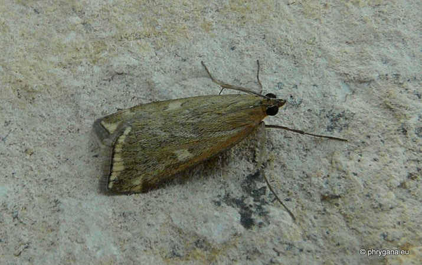
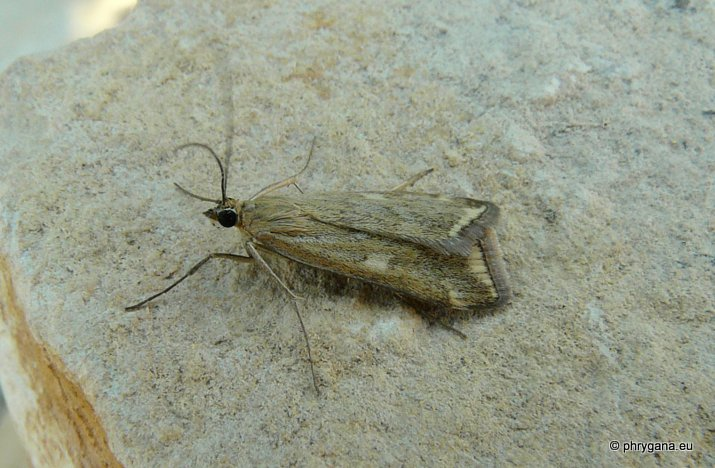
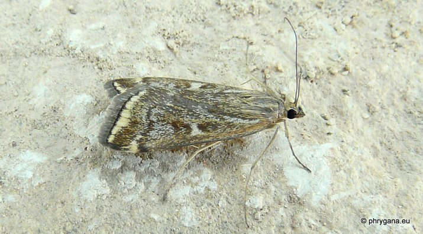

| PHRYGANA | Fauna | Flora | Galles | liste des espèces |
contact -
info - commentaires phrygana1 (at) gmail.com |
| Particularités crétoises | nouveautés | Mines | ressources naturelles |
| Loxostege sticticalis (Linnaeus 1761) |
| 385 | Fauna | CRAMBIDAE | Pyraustinae | Loxostege Hubner 1825 |
|
 Loxostege sticticalis Melambes (Agios Giorgos) 12 juillet 2012 |
| syn.: Pyrausta sticticalis L. |
| en: Beet Webworm |
| Envergure: +- 20 mm pour le mâle; 20 - 26 mm pour la femelle |
| Adulte: la couleur de fond est beige sable clair; orbiculaire et réniforme séparées par une tache blanc sable; bande marginale blanc sable bordée par une ligne noire; frange blanc grisâtre |
| La chenille est polyphage: diverses Chenopodiaceae, Fabaceae, Solanaceae, Brassicaceae, Asteraceae |
| Espèce multivoltine; oeufs entre 100 et 300; pondus sur la face inférieure des feuilles ou sur le sol en petits groupes de 2 à 20; éclosion en 1-2 semaines; développement de la larve (de couleur verte à vert grisâtre) entre 2 et 6 semaines; chrysalidation dans un cocon dans le sol |
| Période de vol: avril mai juin juillet octobre novembre |
| Statut en Crète: indigène |
| Biotopes en Crète: phrygana, olivaies, jardins, parcs, forêts claires, cultures |
| Distribution: Europe, Asie, Japon; introduit en Amérique du Nord |
| Note: vient à la lumière; peut parfois causé de nombreux dégats sur des plantes cultivées |
|
 Loxostege sticticalis Melambes (Agios Giorgos) 12 juillet 2012 |
|
 Loxostege sticticalis Melambes (Agios Giorgos) 12 juillet 2012 |
| 16 juillet 2012 |
| © paul fontaine -- © Phrygana.eu 2007 -- 2013 |